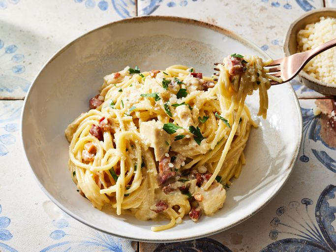

Chicken Carbonara Pasta Bake

Description
This chicken carbonara pasta bake is the perfect Sunday
dinner choice for the whole family. Serve with a side of
roasted vegetables, a salad, and some crusty bread to soak up
extra sauce.
Ingredients
- Pancetta: This chicken carbonara pasta bake recipe starts with pancetta.
- Spaghetti: You will need one 16-ounce package of spaghetti to make six servings.
- Egg yolks: The traditional rich carbonara sauce is made with four egg yolks.
- Parmesan: You will need two cups of Parmesan cheese.
- Heavy cream: Make sure the heavy cream is room temperature.
- Chicken: This recipe is a great use for leftover cooked chicken breast.
- Parsley: Fresh Italian parsley is optional, but it adds a nice pop of color and flavor.
Steps
- Cook the pancetta until lightly browned and crisp, then set aside.
- Boil spaghetti, reserve two cups of pasta water, and set aside.
- Whisk the eggs in a bowl, then whisk in 1 ½ cups of the hot pasta water.
- Whisk in the cheese and cream.
- Add the pasta, pancetta, and chicken to the sauce and toss.
- Transfer the mixture to a prepared baking dish and bake until the sauce is thickened.
- Stir and let stand so the sauce can continue to thicken. Add more pasta water if you like.
- Garnish with parsley and Parmesan cheese.